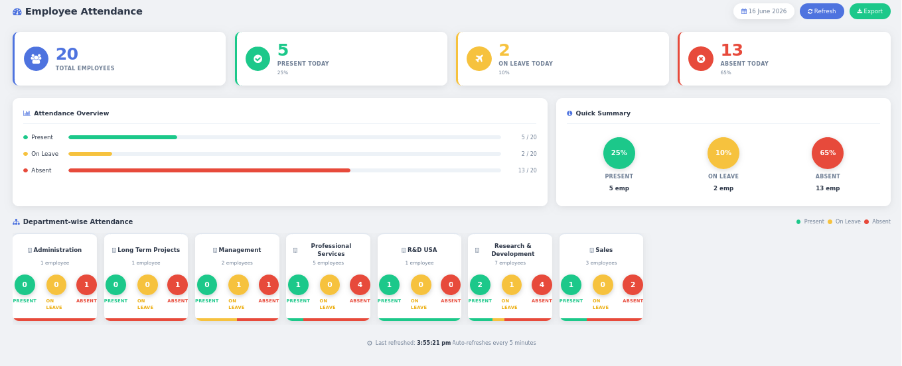
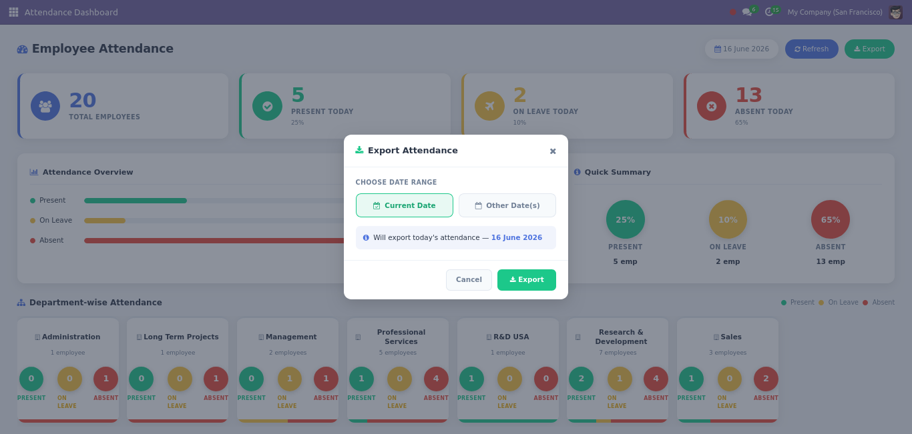
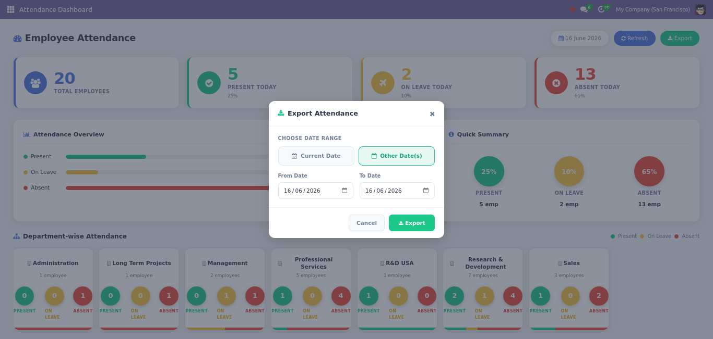

|
◕
Live Summary Cards
Total, Present, On Leave, Absent — updated in real time with percentage breakdowns.
|
🏢
Department Breakdown
Per-department Present / On Leave / Absent circles with a colour-coded mini bar.
|
📄
Excel Export
Export today's or any date-range attendance register as a formatted .xlsx file in one click.
|
🔎
Click-to-Drilldown
Every count card and department circle opens the filtered employee or attendance list view.
|
Your workforce at a glance — always up to date
The HR Attendance Dashboard gives HR managers and administrators a real-time snapshot of the entire workforce. Install it and instantly see a live count of who is Present, On Leave, or Absent — for the full company and broken down by department. Every number is clickable and opens the matching filtered list for immediate action.
|
◕ Four Live Summary Cards
Total Employees · Present Today · On Leave Today · Absent Today — each showing count and percentage, clickable to drilldown.
|
▮ Attendance Overview Panel
Colour-coded horizontal progress bars — green for Present, amber for On Leave, red for Absent — with exact counts alongside each bar.
|
|
🏢 Department-wise Breakdown
Scrollable row of department cards — each shows the dept name, employee count, and three clickable circles (green Present · amber On Leave · red Absent) plus a stacked mini bar.
|
📄 One-Click Excel Export
Export a formatted .xlsx attendance register for today or any custom date range — all employees, department, shift, check-in/out times, and P/A/L status.
|
See exactly what you get
Three screenshots — the full live dashboard, the export modal with Current Date mode, and the Date Range picker.





Everything included — nothing to configure
hr.attendance filtered to today's check-ins — showing employee, department, check-in, check-out, and worked hours. Clicking "On Leave" or "Absent" opens hr.employee filtered to those employee IDs — showing name, department, job position, and phone. Department circles also drilldown to the matching subset.
setInterval timer.
The timestamp of the last refresh is shown in the footer. A manual Refresh button is also available in the top header for immediate updates.
Download a formatted attendance register in one click
The Export button sits in the header next to Refresh. Click it to open the Export modal.
Choose Current Date for today's snapshot, or Other Date(s) to pick any date range up to 366 days.
The server generates a styled .xlsx file and the browser downloads it automatically.
|
📅 Current Date
Downloads today's full attendance register in a single click — no date entry required. The filename is
attendance_YYYYMMDD.xlsx.
ⓘ Best for: Daily HR morning check, shift supervisors, attendance managers
|
📅 Other Date(s) — Range
Pick any From and To date (up to 366 days). One row per employee per day. Filename:
attendance_YYYYMMDD_to_YYYYMMDD.xlsx.
ⓘ Best for: Monthly payroll preparation, HR audits, leave reconciliation
|
| Column | Description | Notes |
|---|---|---|
| Sl No | Sequential row number | Auto-numbered |
| Employee Name | Full employee name | From hr.employee |
| Department | Employee department | Blank if no dept |
| Shift Name | Work schedule / shift | resource_calendar_id.name |
| Date | Attendance date | Range mode only |
| Check-In Time | First punch of the day | Local timezone |
| Check-Out Time | Last punch of the day | Blank if not checked out |
| Present | Yes / No | Green highlight |
| Absent | Yes / No | Red highlight |
| On Leave | Yes / No | Amber highlight |
Install in 3 steps — live in under 2 minutes
|
1
|
Install the module
Go to Settings → Apps → search "HR Attendance Dashboard" → Install. Requires
hr, hr_attendance, and hr_holidays. xlsxwriter (Python) must be installed on the server. |
|
2
|
Open the Attendance app
Navigate to Attendance → Dashboard in the top menu. The live dashboard loads immediately — no configuration required.
|
|
3
|
Use it — click, drilldown, export
Click any count card or department circle to open the filtered list. Use the Export button in the header to download the attendance register as Excel for today or any date range.
|
Frequently asked questions
Module information
|
Compatibility
Odoo 19
Community & Enterprise
Version 19.0.1.0.0 |
Dependencies
Standard Modules Only
hr, hr_attendance,hr_holidays · xlsxwriter |
Frontend
OWL 2 Component
Native Odoo 19 OWL 2
SCSS · JSON-RPC |
|
Export
xlsxwriter
HTTP GET route · Browser auto-download · Styled .xlsx
|
License & Price
OPL-1 · $5 USD
One-time purchase
No subscription |
Support
Odoo Wings
vsmanoj144@gmail.com
Response within 48 hrs |